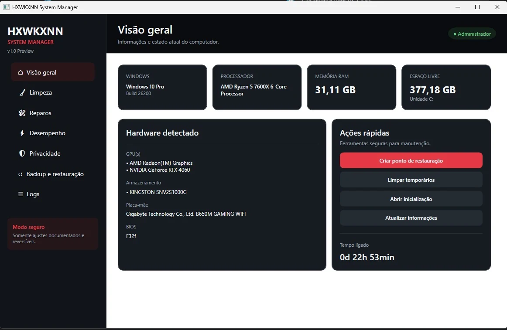

Privacidade
Configurações claras e controle total dos seus dados.
Privacy • Security • Diagnostics
Uma central transparente para entender, proteger e administrar o Windows. Cada configuração terá estado atual, explicação, impacto e reversão.
Pontuação explicável, não milagrosa.
Direção do produto
O HXWKXNN System Manager não esconde o que faz. Cada análise e alteração será apresentada de forma clara, documentada e reversível.
Configurações claras e controle total dos seus dados.
Análises, auditorias e hardening para proteger o que importa.
Informações explicadas de forma simples e objetiva.
Software útil, leve e feito com propósito.
Módulos principais
Defender, Firewall, Secure Boot, TPM, BitLocker, UAC, SmartScreen e Integridade de Memória.
Telemetria opcional, ID de publicidade, sugestões, histórico, pesquisa na nuvem e permissões.
Usuários administradores, portas, tarefas agendadas, serviços e compartilhamentos.
Backup do estado anterior, histórico de mudanças e restauração individual.
DISM, SFC, hardware, armazenamento, drivers, logs e manutenção segura.
Exportação clara das verificações, riscos encontrados e recomendações.
Produto em evolução
A primeira imagem é uma captura real da versão Preview. As telas de Segurança e Privacidade são conceitos visuais da direção planejada para os próximos módulos.

Estado das proteções essenciais com recomendações explicáveis.
Configurações reversíveis com impacto e estado atual visíveis.
Roadmap
Changelog
Correção do Windows 11, versão do sistema, SSD amigável e melhorias nos cards.
Correções de compilação, coleta de hardware e limpeza de temporários.
Dashboard, reparos, desempenho, backups e logs em C# e .NET.
Tecnologias
O repositório público será disponibilizado quando a primeira versão estável estiver pronta.
Acompanhe o projeto
A versão pública será disponibilizada quando os módulos essenciais estiverem estáveis, testados e documentados.